<!DOCTYPE html>


<html lang="en" data-content_root="../" >

  <head>
    <meta charset="utf-8" />
    <meta name="viewport" content="width=device-width, initial-scale=1.0" /><meta name="viewport" content="width=device-width, initial-scale=1" />

    <title>KERAS and MNIST &#8212; AST 390: Computational Astrophysics</title>
  
  
  
  <script data-cfasync="false">
    document.documentElement.dataset.mode = localStorage.getItem("mode") || "";
    document.documentElement.dataset.theme = localStorage.getItem("theme") || "light";
  </script>
  
  <!-- Loaded before other Sphinx assets -->
  <link href="../_static/styles/theme.css?digest=8d27b9dea8ad943066ae" rel="stylesheet" />
<link href="../_static/styles/bootstrap.css?digest=8d27b9dea8ad943066ae" rel="stylesheet" />
<link href="../_static/styles/pydata-sphinx-theme.css?digest=8d27b9dea8ad943066ae" rel="stylesheet" />

  
  <link href="../_static/vendor/fontawesome/6.5.1/css/all.min.css?digest=8d27b9dea8ad943066ae" rel="stylesheet" />
  <link rel="preload" as="font" type="font/woff2" crossorigin href="../_static/vendor/fontawesome/6.5.1/webfonts/fa-solid-900.woff2" />
<link rel="preload" as="font" type="font/woff2" crossorigin href="../_static/vendor/fontawesome/6.5.1/webfonts/fa-brands-400.woff2" />
<link rel="preload" as="font" type="font/woff2" crossorigin href="../_static/vendor/fontawesome/6.5.1/webfonts/fa-regular-400.woff2" />

    <link rel="stylesheet" type="text/css" href="../_static/pygments.css?v=fa44fd50" />
    <link rel="stylesheet" type="text/css" href="../_static/styles/sphinx-book-theme.css?v=384b581d" />
    <link rel="stylesheet" type="text/css" href="../_static/togglebutton.css?v=13237357" />
    <link rel="stylesheet" type="text/css" href="../_static/copybutton.css?v=76b2166b" />
    <link rel="stylesheet" type="text/css" href="../_static/mystnb.4510f1fc1dee50b3e5859aac5469c37c29e427902b24a333a5f9fcb2f0b3ac41.css" />
    <link rel="stylesheet" type="text/css" href="../_static/sphinx-thebe.css?v=4fa983c6" />
    <link rel="stylesheet" type="text/css" href="../_static/sphinx-design.min.css?v=87e54e7c" />
    <link rel="stylesheet" type="text/css" href="../_static/myfile.css?v=359afcf4" />
  
  <!-- Pre-loaded scripts that we'll load fully later -->
  <link rel="preload" as="script" href="../_static/scripts/bootstrap.js?digest=8d27b9dea8ad943066ae" />
<link rel="preload" as="script" href="../_static/scripts/pydata-sphinx-theme.js?digest=8d27b9dea8ad943066ae" />
  <script src="../_static/vendor/fontawesome/6.5.1/js/all.min.js?digest=8d27b9dea8ad943066ae"></script>

    <script src="../_static/documentation_options.js?v=9eb32ce0"></script>
    <script src="../_static/doctools.js?v=9a2dae69"></script>
    <script src="../_static/sphinx_highlight.js?v=dc90522c"></script>
    <script src="../_static/clipboard.min.js?v=a7894cd8"></script>
    <script src="../_static/copybutton.js?v=f281be69"></script>
    <script src="../_static/scripts/sphinx-book-theme.js?v=efea14e4"></script>
    <script>let toggleHintShow = 'Click to show';</script>
    <script>let toggleHintHide = 'Click to hide';</script>
    <script>let toggleOpenOnPrint = 'true';</script>
    <script src="../_static/togglebutton.js?v=4a39c7ea"></script>
    <script>var togglebuttonSelector = '.toggle, .admonition.dropdown';</script>
    <script src="../_static/design-tabs.js?v=f930bc37"></script>
    <script async="async" src="https://www.googletagmanager.com/gtag/js?id=G-M0EDGYM350"></script>
    <script>
                window.dataLayer = window.dataLayer || [];
                function gtag(){ dataLayer.push(arguments); }
                gtag('js', new Date());
                gtag('config', 'G-M0EDGYM350');
            </script>
    <script>const THEBE_JS_URL = "https://unpkg.com/thebe@0.8.2/lib/index.js"; const thebe_selector = ".thebe,.cell"; const thebe_selector_input = "pre"; const thebe_selector_output = ".output, .cell_output"</script>
    <script async="async" src="../_static/sphinx-thebe.js?v=c100c467"></script>
    <script>var togglebuttonSelector = '.toggle, .admonition.dropdown';</script>
    <script>
                window.dataLayer = window.dataLayer || [];
                function gtag(){ dataLayer.push(arguments); }
                gtag('js', new Date());
                gtag('config', 'G-M0EDGYM350');
            </script>
    <script>const THEBE_JS_URL = "https://unpkg.com/thebe@0.8.2/lib/index.js"; const thebe_selector = ".thebe,.cell"; const thebe_selector_input = "pre"; const thebe_selector_output = ".output, .cell_output"</script>
    <script>DOCUMENTATION_OPTIONS.pagename = 'machine-learning/keras-mnist';</script>
    <link rel="index" title="Index" href="../genindex.html" />
    <link rel="search" title="Search" href="../search.html" />
    <link rel="next" title="Keras and the Last Number Problem" href="keras-last-number.html" />
    <link rel="prev" title="Diving Deeper into Machine Learning" href="machine-learning-libraries.html" />
  <meta name="viewport" content="width=device-width, initial-scale=1"/>
  <meta name="docsearch:language" content="en"/>
  </head>
  
  
  <body data-bs-spy="scroll" data-bs-target=".bd-toc-nav" data-offset="180" data-bs-root-margin="0px 0px -60%" data-default-mode="">

  
  
  <a id="pst-skip-link" class="skip-link" href="#main-content">Skip to main content</a>
  
  <div id="pst-scroll-pixel-helper"></div>
  
  <button type="button" class="btn rounded-pill" id="pst-back-to-top">
    <i class="fa-solid fa-arrow-up"></i>
    Back to top
  </button>

  
  <input type="checkbox"
          class="sidebar-toggle"
          name="__primary"
          id="__primary"/>
  <label class="overlay overlay-primary" for="__primary"></label>
  
  <input type="checkbox"
          class="sidebar-toggle"
          name="__secondary"
          id="__secondary"/>
  <label class="overlay overlay-secondary" for="__secondary"></label>
  
  <div class="search-button__wrapper">
    <div class="search-button__overlay"></div>
    <div class="search-button__search-container">
<form class="bd-search d-flex align-items-center"
      action="../search.html"
      method="get">
  <i class="fa-solid fa-magnifying-glass"></i>
  <input type="search"
         class="form-control"
         name="q"
         id="search-input"
         placeholder="Search this book..."
         aria-label="Search this book..."
         autocomplete="off"
         autocorrect="off"
         autocapitalize="off"
         spellcheck="false"/>
  <span class="search-button__kbd-shortcut"><kbd class="kbd-shortcut__modifier">Ctrl</kbd>+<kbd>K</kbd></span>
</form></div>
  </div>
  
    <header class="bd-header navbar navbar-expand-lg bd-navbar">
    </header>
  

  <div class="bd-container">
    <div class="bd-container__inner bd-page-width">
      
      
      
      <div class="bd-sidebar-primary bd-sidebar">
        

  
  <div class="sidebar-header-items sidebar-primary__section">
    
    
    
    
  </div>
  
    <div class="sidebar-primary-items__start sidebar-primary__section">
        <div class="sidebar-primary-item">

  

<a class="navbar-brand logo" href="../intro.html">
  
  
  
  
  
    
    
      
    
    
    
    <script>document.write(``);</script>
  
  
</a></div>
        <div class="sidebar-primary-item">

 <script>
 document.write(`
   <button class="btn navbar-btn search-button-field search-button__button" title="Search" aria-label="Search" data-bs-placement="bottom" data-bs-toggle="tooltip">
    <i class="fa-solid fa-magnifying-glass"></i>
    <span class="search-button__default-text">Search</span>
    <span class="search-button__kbd-shortcut"><kbd class="kbd-shortcut__modifier">Ctrl</kbd>+<kbd class="kbd-shortcut__modifier">K</kbd></span>
   </button>
 `);
 </script></div>
        <div class="sidebar-primary-item"><nav class="bd-links bd-docs-nav" aria-label="Main">
    <div class="bd-toc-item navbar-nav active">
        
        <ul class="nav bd-sidenav bd-sidenav__home-link">
            <li class="toctree-l1">
                <a class="reference internal" href="../intro.html">
                    Computational Astrophysics
                </a>
            </li>
        </ul>
        <p aria-level="2" class="caption" role="heading"><span class="caption-text">Logistics and Overview</span></p>
<ul class="nav bd-sidenav">
<li class="toctree-l1"><a class="reference internal" href="../overview/intro.html">Course Overview</a></li>
<li class="toctree-l1"><a class="reference internal" href="../overview/using.html">Using These Notes</a></li>
</ul>
<p aria-level="2" class="caption" role="heading"><span class="caption-text">Tour of Python</span></p>
<ul class="nav bd-sidenav">
<li class="toctree-l1"><a class="reference internal" href="../python/jupyter.html">Jupyter</a></li>
<li class="toctree-l1 has-children"><a class="reference internal" href="../python/python-basics.html">Python Basics</a><input class="toctree-checkbox" id="toctree-checkbox-1" name="toctree-checkbox-1" type="checkbox"/><label class="toctree-toggle" for="toctree-checkbox-1"><i class="fa-solid fa-chevron-down"></i></label><ul>
<li class="toctree-l2"><a class="reference internal" href="../python/python-datatypes.html">Basic Python Datatypes</a></li>
<li class="toctree-l2"><a class="reference internal" href="../python/python-advanced-datatypes.html">Advanced Datatypes</a></li>
<li class="toctree-l2"><a class="reference internal" href="../python/python-control-flow.html">Control Flow</a></li>
</ul>
</li>
<li class="toctree-l1 has-children"><a class="reference internal" href="../python/python-functions-classes.html">Functions and Classes</a><input class="toctree-checkbox" id="toctree-checkbox-2" name="toctree-checkbox-2" type="checkbox"/><label class="toctree-toggle" for="toctree-checkbox-2"><i class="fa-solid fa-chevron-down"></i></label><ul>
<li class="toctree-l2"><a class="reference internal" href="../python/python-functions.html">Functions</a></li>
<li class="toctree-l2"><a class="reference internal" href="../python/python-classes.html">Classes</a></li>
</ul>
</li>
<li class="toctree-l1"><a class="reference internal" href="../python/numpy-basics.html">NumPy</a></li>
<li class="toctree-l1"><a class="reference internal" href="../python/matplotlib-basics.html">matplotlib</a></li>


</ul>
<p aria-level="2" class="caption" role="heading"><span class="caption-text">Git and Github</span></p>
<ul class="nav bd-sidenav">
<li class="toctree-l1"><a class="reference internal" href="../git/version-control.html">Version Control</a></li>
<li class="toctree-l1"><a class="reference internal" href="../git/git.html">A Git Walkthrough</a></li>

<li class="toctree-l1"><a class="reference internal" href="../git/git-branches.html">Git Branches</a></li>
<li class="toctree-l1"><a class="reference internal" href="../git/git-remotes.html">Git Remotes</a></li>
<li class="toctree-l1"><a class="reference internal" href="../git/github.html">github</a></li>
<li class="toctree-l1"><a class="reference internal" href="../git/pull-requests.html">Pull requests</a></li>
</ul>
<p aria-level="2" class="caption" role="heading"><span class="caption-text">Fundamentals</span></p>
<ul class="nav bd-sidenav">
<li class="toctree-l1 has-children"><a class="reference internal" href="../basics/floating-point/floating-point-details.html">Floating Point Format</a><input class="toctree-checkbox" id="toctree-checkbox-3" name="toctree-checkbox-3" type="checkbox"/><label class="toctree-toggle" for="toctree-checkbox-3"><i class="fa-solid fa-chevron-down"></i></label><ul>
<li class="toctree-l2"><a class="reference internal" href="../basics/floating-point/numerical_error.html">Numerical Errors: Roundoff and Truncation</a></li>
</ul>
</li>
<li class="toctree-l1"><a class="reference internal" href="../basics/diff-int/differentiation.html">Differentiation</a></li>
<li class="toctree-l1 has-children"><a class="reference internal" href="../basics/diff-int/integration.html">Integration</a><input class="toctree-checkbox" id="toctree-checkbox-4" name="toctree-checkbox-4" type="checkbox"/><label class="toctree-toggle" for="toctree-checkbox-4"><i class="fa-solid fa-chevron-down"></i></label><ul>
<li class="toctree-l2"><a class="reference internal" href="../basics/diff-int/integration-simpsons.html">Simpson’s Rule Derived</a></li>
<li class="toctree-l2"><a class="reference internal" href="../basics/diff-int/integration-composite.html">Composite Integration</a></li>
<li class="toctree-l2"><a class="reference internal" href="../basics/diff-int/application-blackbody.html">Application: Blackbody Radiation</a></li>
<li class="toctree-l2"><a class="reference internal" href="../basics/diff-int/integration-scipy.html">SciPy Integration</a></li>
<li class="toctree-l2"><a class="reference internal" href="../basics/diff-int/going-further.html">Going Further</a></li>
</ul>
</li>
<li class="toctree-l1 has-children"><a class="reference internal" href="../basics/roots/root-finding.html">Root finding</a><input class="toctree-checkbox" id="toctree-checkbox-5" name="toctree-checkbox-5" type="checkbox"/><label class="toctree-toggle" for="toctree-checkbox-5"><i class="fa-solid fa-chevron-down"></i></label><ul>
<li class="toctree-l2"><a class="reference internal" href="../basics/roots/roots-scipy.html">SciPy Root Finding</a></li>
<li class="toctree-l2"><a class="reference internal" href="../basics/roots/application-wiens.html">Application: Wien’s law</a></li>
<li class="toctree-l2"><a class="reference internal" href="../basics/roots/application-degeneracy.html">Application: Degenerate Electrons</a></li>
</ul>
</li>
<li class="toctree-l1 has-children"><a class="reference internal" href="../basics/linear-algebra/la-overview.html">Linear Algebra</a><input class="toctree-checkbox" id="toctree-checkbox-6" name="toctree-checkbox-6" type="checkbox"/><label class="toctree-toggle" for="toctree-checkbox-6"><i class="fa-solid fa-chevron-down"></i></label><ul>
<li class="toctree-l2"><a class="reference internal" href="../basics/linear-algebra/la-basics.html">Review of Matrices</a></li>
<li class="toctree-l2 has-children"><a class="reference internal" href="../basics/linear-algebra/linear-system-example.html">Solving A System of Linear Equations</a><input class="toctree-checkbox" id="toctree-checkbox-7" name="toctree-checkbox-7" type="checkbox"/><label class="toctree-toggle" for="toctree-checkbox-7"><i class="fa-solid fa-chevron-down"></i></label><ul>
<li class="toctree-l3"><a class="reference internal" href="../basics/linear-algebra/gaussian_elimination.html">Gaussian Elimination</a></li>
<li class="toctree-l3"><a class="reference internal" href="../basics/linear-algebra/gaussian_elimination_python.html">Implementing Gaussian Elimination</a></li>
<li class="toctree-l3"><a class="reference internal" href="../basics/linear-algebra/la-cxx.html">C++ Implementation</a></li>
</ul>
</li>
<li class="toctree-l2"><a class="reference internal" href="../basics/linear-algebra/linear-algebra-libraries.html">Libraries for Linear Algebra</a></li>
<li class="toctree-l2"><a class="reference internal" href="../basics/linear-algebra/condition-number.html">Condition Number</a></li>
<li class="toctree-l2 has-children"><a class="reference internal" href="../basics/linear-algebra/multivariate-roots.html">Multivariate Root Finding</a><input class="toctree-checkbox" id="toctree-checkbox-8" name="toctree-checkbox-8" type="checkbox"/><label class="toctree-toggle" for="toctree-checkbox-8"><i class="fa-solid fa-chevron-down"></i></label><ul>
<li class="toctree-l3"><a class="reference internal" href="../basics/linear-algebra/application-lorenz.html">Application: Stationary State of Lorenz System</a></li>
</ul>
</li>
<li class="toctree-l2"><a class="reference internal" href="../basics/linear-algebra/going-further.html">Going Further</a></li>
</ul>
</li>
</ul>
<p aria-level="2" class="caption" role="heading"><span class="caption-text">Ordinary Differential Equations</span></p>
<ul class="nav bd-sidenav">
<li class="toctree-l1 has-children"><a class="reference internal" href="../ODEs/ODEs-euler.html">Basic Methods for ODEs</a><input class="toctree-checkbox" id="toctree-checkbox-9" name="toctree-checkbox-9" type="checkbox"/><label class="toctree-toggle" for="toctree-checkbox-9"><i class="fa-solid fa-chevron-down"></i></label><ul>
<li class="toctree-l2"><a class="reference internal" href="../ODEs/ODEs-midpoint.html">2nd Order Runge-Kutta / Midpoint Method</a></li>
<li class="toctree-l2"><a class="reference internal" href="../ODEs/ODEs-rk4.html">4th-order Runge-Kutta</a></li>
</ul>
</li>
<li class="toctree-l1 has-children"><a class="reference internal" href="../ODEs/adaptive_stepping.html">Adaptive Timesteps</a><input class="toctree-checkbox" id="toctree-checkbox-10" name="toctree-checkbox-10" type="checkbox"/><label class="toctree-toggle" for="toctree-checkbox-10"><i class="fa-solid fa-chevron-down"></i></label><ul>
<li class="toctree-l2"><a class="reference internal" href="../ODEs/adaptive-orbits.html">Adaptive RK4 Orbits</a></li>
<li class="toctree-l2"><a class="reference internal" href="../ODEs/ODEs-scipy.html">SciPy ODE Integration</a></li>
<li class="toctree-l2"><a class="reference internal" href="../ODEs/application-few-body.html">Application: Few Body Problem</a></li>
</ul>
</li>
<li class="toctree-l1"><a class="reference internal" href="../ODEs/inclass-lorenz.html">In-Class Example</a></li>
<li class="toctree-l1 has-children"><a class="reference internal" href="../ODEs/ODEs-conservation.html">ODEs and Conservation</a><input class="toctree-checkbox" id="toctree-checkbox-11" name="toctree-checkbox-11" type="checkbox"/><label class="toctree-toggle" for="toctree-checkbox-11"><i class="fa-solid fa-chevron-down"></i></label><ul>
<li class="toctree-l2"><a class="reference internal" href="../ODEs/ODEs-timereverse.html">Time Symmetric Integration</a></li>
</ul>
</li>
<li class="toctree-l1 has-children"><a class="reference internal" href="../ODEs/boundary-value-problems.html">Two Point Boundary Value Problems</a><input class="toctree-checkbox" id="toctree-checkbox-12" name="toctree-checkbox-12" type="checkbox"/><label class="toctree-toggle" for="toctree-checkbox-12"><i class="fa-solid fa-chevron-down"></i></label><ul>
<li class="toctree-l2"><a class="reference internal" href="../ODEs/application-lane-emden.html">Application: Stellar Structure</a></li>
</ul>
</li>
<li class="toctree-l1"><a class="reference internal" href="../ODEs/more-applications.html">More Applications</a></li>
</ul>
<p aria-level="2" class="caption" role="heading"><span class="caption-text">Working with Data Samples</span></p>
<ul class="nav bd-sidenav">
<li class="toctree-l1 has-children"><a class="reference internal" href="../ffts/fourier.html">Fourier Transforms</a><input class="toctree-checkbox" id="toctree-checkbox-13" name="toctree-checkbox-13" type="checkbox"/><label class="toctree-toggle" for="toctree-checkbox-13"><i class="fa-solid fa-chevron-down"></i></label><ul>
<li class="toctree-l2"><a class="reference internal" href="../ffts/dft.html">Discrete Fourier Transform</a></li>
<li class="toctree-l2"><a class="reference internal" href="../ffts/dft-tests.html">Testing our DFT</a></li>
<li class="toctree-l2"><a class="reference internal" href="../ffts/inclass-filter.html">In-class Example: A Frequency Filter</a></li>
<li class="toctree-l2"><a class="reference internal" href="../ffts/inclass-pendulum.html">In-class Example: The Pendulum</a></li>
<li class="toctree-l2"><a class="reference internal" href="../ffts/fft.html">Fast Fourier Transform</a></li>
<li class="toctree-l2"><a class="reference internal" href="../ffts/application-lightcurves.html">Application: X-ray Burst Timing</a></li>
<li class="toctree-l2"><a class="reference internal" href="../ffts/fft-multid.html">FFT in Multiple Dimensions</a></li>
<li class="toctree-l2"><a class="reference internal" href="../ffts/non-periodic.html">Non-uniform Data</a></li>
</ul>
</li>
<li class="toctree-l1 has-children"><a class="reference internal" href="../interpolation/interpolation.html">Interpolation</a><input class="toctree-checkbox" id="toctree-checkbox-14" name="toctree-checkbox-14" type="checkbox"/><label class="toctree-toggle" for="toctree-checkbox-14"><i class="fa-solid fa-chevron-down"></i></label><ul>
<li class="toctree-l2"><a class="reference internal" href="../interpolation/linear-interpolation.html">Linear Interpolation</a></li>
<li class="toctree-l2"><a class="reference internal" href="../interpolation/lagrange-interpolation.html">Lagrange Interpolation</a></li>
<li class="toctree-l2"><a class="reference internal" href="../interpolation/conservative-interpolation.html">Conservative Interpolation</a></li>
<li class="toctree-l2"><a class="reference internal" href="../interpolation/going-further.html">Going Further</a></li>
</ul>
</li>
<li class="toctree-l1 has-children"><a class="reference internal" href="../fitting/least_squares.html">Least Squares Regression</a><input class="toctree-checkbox" id="toctree-checkbox-15" name="toctree-checkbox-15" type="checkbox"/><label class="toctree-toggle" for="toctree-checkbox-15"><i class="fa-solid fa-chevron-down"></i></label><ul>
<li class="toctree-l2"><a class="reference internal" href="../fitting/fitting-to-a-line.html">Fitting to a Line</a></li>
<li class="toctree-l2"><a class="reference internal" href="../fitting/generalized-linear-least-squares.html">General Linear Least Squares</a></li>
<li class="toctree-l2"><a class="reference internal" href="../fitting/fitting-nonlinear.html">Nonlinear Fitting</a></li>
<li class="toctree-l2"><a class="reference internal" href="../fitting/fitting-scipy.html">Fitting Function in SciPy</a></li>
<li class="toctree-l2"><a class="reference internal" href="../fitting/application-snia-h0.html">Application: Estimating <span class="math notranslate nohighlight">\(H_0\)</span> from Type Ia Supernovae</a></li>
</ul>
</li>
</ul>
<p aria-level="2" class="caption" role="heading"><span class="caption-text">Partial Differential Equations</span></p>
<ul class="nav bd-sidenav">
<li class="toctree-l1"><a class="reference internal" href="../advection/pdes.html">Partial Differential Equations</a></li>
<li class="toctree-l1 has-children"><a class="reference internal" href="../advection/advection-intro.html">Advection</a><input class="toctree-checkbox" id="toctree-checkbox-16" name="toctree-checkbox-16" type="checkbox"/><label class="toctree-toggle" for="toctree-checkbox-16"><i class="fa-solid fa-chevron-down"></i></label><ul>
<li class="toctree-l2"><a class="reference internal" href="../advection/advection/advection-partI.html">Linear Advection Equation</a></li>
<li class="toctree-l2"><a class="reference internal" href="../advection/advection/advection-upwind.html">Upwinding</a></li>
<li class="toctree-l2"><a class="reference internal" href="../advection/advection/advection-convergence.html">Measuring Convergence</a></li>
<li class="toctree-l2"><a class="reference internal" href="../advection/advection/advection-finite-volumes.html">Finite-Volume Discretization</a></li>
<li class="toctree-l2"><a class="reference internal" href="../advection/advection/advection-second-order.html">Second-order advection</a></li>
</ul>
</li>
<li class="toctree-l1 has-children"><a class="reference internal" href="../advection/burgers/burgers.html">Burgers’ Equation</a><input class="toctree-checkbox" id="toctree-checkbox-17" name="toctree-checkbox-17" type="checkbox"/><label class="toctree-toggle" for="toctree-checkbox-17"><i class="fa-solid fa-chevron-down"></i></label><ul>
<li class="toctree-l2"><a class="reference internal" href="../advection/burgers/burgers-riemann.html">Burgers’ Riemann Problem</a></li>
<li class="toctree-l2"><a class="reference internal" href="../advection/burgers/burgers-methods.html">Solving Burgers’ equation</a></li>
</ul>
</li>
<li class="toctree-l1 has-children"><a class="reference internal" href="../elliptic_multigrid/intro/elliptic-problems.html">Poisson problem</a><input class="toctree-checkbox" id="toctree-checkbox-18" name="toctree-checkbox-18" type="checkbox"/><label class="toctree-toggle" for="toctree-checkbox-18"><i class="fa-solid fa-chevron-down"></i></label><ul>
<li class="toctree-l2"><a class="reference internal" href="../elliptic_multigrid/relaxation/relaxation.html">Relaxation</a></li>
<li class="toctree-l2"><a class="reference internal" href="../elliptic_multigrid/relaxation/elliptic-relaxation.html">Implementing Relaxation</a></li>
<li class="toctree-l2"><a class="reference internal" href="../elliptic_multigrid/relaxation/elliptic-residual.html">Residual</a></li>
<li class="toctree-l2"><a class="reference internal" href="../elliptic_multigrid/relaxation/elliptic-modes.html">Behavior of Single Modes</a></li>
</ul>
</li>
<li class="toctree-l1 has-children"><a class="reference internal" href="../elliptic_multigrid/multigrid/multigrid.html">Multigrid</a><input class="toctree-checkbox" id="toctree-checkbox-19" name="toctree-checkbox-19" type="checkbox"/><label class="toctree-toggle" for="toctree-checkbox-19"><i class="fa-solid fa-chevron-down"></i></label><ul>
<li class="toctree-l2"><a class="reference internal" href="../elliptic_multigrid/multigrid/multigrid-restrict-prolong.html">Restriction and Prolongation</a></li>
<li class="toctree-l2"><a class="reference internal" href="../elliptic_multigrid/multigrid/multigrid-two-grid.html">Two Grid Correction</a></li>
<li class="toctree-l2"><a class="reference internal" href="../elliptic_multigrid/multigrid/multigrid-vcycles.html">V-Cycles</a></li>
</ul>
</li>
<li class="toctree-l1 has-children"><a class="reference internal" href="../diffusion/diffusion.html">Diffusion</a><input class="toctree-checkbox" id="toctree-checkbox-20" name="toctree-checkbox-20" type="checkbox"/><label class="toctree-toggle" for="toctree-checkbox-20"><i class="fa-solid fa-chevron-down"></i></label><ul>
<li class="toctree-l2"><a class="reference internal" href="../diffusion/diffusion-explicit.html">Explicit Discretization of Diffusion</a></li>
<li class="toctree-l2"><a class="reference internal" href="../diffusion/diffusion-implicit-intro.html">Implicit Methods for Diffusion</a></li>
<li class="toctree-l2"><a class="reference internal" href="../diffusion/tridiagonal-system.html">Solving a Tridiagonal System</a></li>
<li class="toctree-l2"><a class="reference internal" href="../diffusion/diffusion-implicit-direct.html">Direct Solve for Implicit Diffusion</a></li>
<li class="toctree-l2"><a class="reference internal" href="../diffusion/diffusion-implicit-relax.html">Implicit Diffusion via Relaxation</a></li>
<li class="toctree-l2"><a class="reference internal" href="../diffusion/diffusion-going-further.html">Going Further</a></li>
</ul>
</li>
</ul>
<p aria-level="2" class="caption" role="heading"><span class="caption-text">Hydrodynamics</span></p>
<ul class="nav bd-sidenav">
<li class="toctree-l1"><a class="reference internal" href="../euler/euler.html">Euler Equations</a></li>
<li class="toctree-l1"><a class="reference internal" href="../euler/euler-eigen.html">Euler equations eigensystem</a></li>
<li class="toctree-l1"><a class="reference internal" href="../euler/euler-riemann.html">Euler Riemann problem</a></li>
<li class="toctree-l1"><a class="reference internal" href="../euler/euler-riemann-sampling.html">Sampling the Riemann solution</a></li>
<li class="toctree-l1"><a class="reference internal" href="../euler/euler-solver.html">Second-order Euler solver</a></li>
</ul>
<p aria-level="2" class="caption" role="heading"><span class="caption-text">Stiff ODEs</span></p>
<ul class="nav bd-sidenav">
<li class="toctree-l1"><a class="reference internal" href="../reaction_networks/ODEs-implicit.html">Implicit Methods for ODEs</a></li>
<li class="toctree-l1"><a class="reference internal" href="../reaction_networks/ODEs-implicit-systems.html">Implicit Methods for Systems of ODEs</a></li>
<li class="toctree-l1"><a class="reference internal" href="../reaction_networks/ODEs-implicit-nonlinear-systems.html">Implicit Methods and Nonlinear Systems</a></li>
<li class="toctree-l1 has-children"><a class="reference internal" href="../reaction_networks/reactions.html">Application: Nuclear Reaction Networks</a><input class="toctree-checkbox" id="toctree-checkbox-21" name="toctree-checkbox-21" type="checkbox"/><label class="toctree-toggle" for="toctree-checkbox-21"><i class="fa-solid fa-chevron-down"></i></label><ul>
<li class="toctree-l2"><a class="reference internal" href="../reaction_networks/application-CNO-network.html">Integration Example</a></li>
</ul>
</li>
</ul>
<p aria-level="2" class="caption" role="heading"><span class="caption-text">Magnetohydrodynamics</span></p>
<ul class="nav bd-sidenav">
<li class="toctree-l1"><a class="reference internal" href="../mhd/mhd.html">Magnetohydrodynamics Equations</a></li>
<li class="toctree-l1"><a class="reference internal" href="../mhd/mhd-riemann.html">Solving the Riemann problem in MHD</a></li>
</ul>
<p aria-level="2" class="caption" role="heading"><span class="caption-text">Machine Learning</span></p>
<ul class="current nav bd-sidenav">
<li class="toctree-l1 has-children"><a class="reference internal" href="neural-net-basics.html">Artificial Neural Network Basics</a><input class="toctree-checkbox" id="toctree-checkbox-22" name="toctree-checkbox-22" type="checkbox"/><label class="toctree-toggle" for="toctree-checkbox-22"><i class="fa-solid fa-chevron-down"></i></label><ul>
<li class="toctree-l2"><a class="reference internal" href="gradient-descent.html">Gradient Descent</a></li>
<li class="toctree-l2"><a class="reference internal" href="neural-net-derivation.html">Deriving the Learning Correction</a></li>
<li class="toctree-l2"><a class="reference internal" href="last-number.html">A First Example</a></li>
</ul>
</li>
<li class="toctree-l1 has-children"><a class="reference internal" href="neural-net-hidden.html">Hidden Layers</a><input class="toctree-checkbox" id="toctree-checkbox-23" name="toctree-checkbox-23" type="checkbox"/><label class="toctree-toggle" for="toctree-checkbox-23"><i class="fa-solid fa-chevron-down"></i></label><ul>
<li class="toctree-l2"><a class="reference internal" href="last-number-hidden.html">Last Number Revisited with a Hidden Layer</a></li>
<li class="toctree-l2"><a class="reference internal" href="neural-net-mnist.html">Example: Character Recognition</a></li>
<li class="toctree-l2"><a class="reference internal" href="neural-net-improvements.html">Improvements</a></li>
</ul>
</li>
<li class="toctree-l1 current active has-children"><a class="reference internal" href="machine-learning-libraries.html">Diving Deeper into Machine Learning</a><input checked="" class="toctree-checkbox" id="toctree-checkbox-24" name="toctree-checkbox-24" type="checkbox"/><label class="toctree-toggle" for="toctree-checkbox-24"><i class="fa-solid fa-chevron-down"></i></label><ul class="current">
<li class="toctree-l2 current active"><a class="current reference internal" href="#">KERAS and MNIST</a></li>

<li class="toctree-l2"><a class="reference internal" href="keras-last-number.html">Keras and the Last Number Problem</a></li>
<li class="toctree-l2"><a class="reference internal" href="keras-clustering.html">Clustering</a></li>
</ul>
</li>
<li class="toctree-l1"><a class="reference internal" href="machine-learning-in-astro.html">Machine Learning in Astronomy</a></li>
</ul>
<p aria-level="2" class="caption" role="heading"><span class="caption-text">Homework</span></p>
<ul class="nav bd-sidenav">
<li class="toctree-l1 has-children"><a class="reference internal" href="../homework/homework_week1.html">Homework 1</a><input class="toctree-checkbox" id="toctree-checkbox-25" name="toctree-checkbox-25" type="checkbox"/><label class="toctree-toggle" for="toctree-checkbox-25"><i class="fa-solid fa-chevron-down"></i></label><ul class="simple">
</ul>
</li>
<li class="toctree-l1 has-children"><a class="reference internal" href="../homework/homework_week2.html">Homework 2</a><input class="toctree-checkbox" id="toctree-checkbox-26" name="toctree-checkbox-26" type="checkbox"/><label class="toctree-toggle" for="toctree-checkbox-26"><i class="fa-solid fa-chevron-down"></i></label><ul class="simple">
</ul>
</li>
<li class="toctree-l1 has-children"><a class="reference internal" href="../homework/homework_week3.html">Homework 3</a><input class="toctree-checkbox" id="toctree-checkbox-27" name="toctree-checkbox-27" type="checkbox"/><label class="toctree-toggle" for="toctree-checkbox-27"><i class="fa-solid fa-chevron-down"></i></label><ul class="simple">
</ul>
</li>
<li class="toctree-l1 has-children"><a class="reference internal" href="../homework/homework_week4.html">Homework 4</a><input class="toctree-checkbox" id="toctree-checkbox-28" name="toctree-checkbox-28" type="checkbox"/><label class="toctree-toggle" for="toctree-checkbox-28"><i class="fa-solid fa-chevron-down"></i></label><ul class="simple">
</ul>
</li>
</ul>

    </div>
</nav></div>
    </div>
  
  
  <div class="sidebar-primary-items__end sidebar-primary__section">
  </div>
  
  <div id="rtd-footer-container"></div>


      </div>
      
      <main id="main-content" class="bd-main">
        
        

<div class="sbt-scroll-pixel-helper"></div>

          <div class="bd-content">
            <div class="bd-article-container">
              
              <div class="bd-header-article">
<div class="header-article-items header-article__inner">
  
    <div class="header-article-items__start">
      
        <div class="header-article-item"><label class="sidebar-toggle primary-toggle btn btn-sm" for="__primary" title="Toggle primary sidebar" data-bs-placement="bottom" data-bs-toggle="tooltip">
  <span class="fa-solid fa-bars"></span>
</label></div>
      
    </div>
  
  
    <div class="header-article-items__end">
      
        <div class="header-article-item">

<div class="article-header-buttons">


<div class="dropdown dropdown-launch-buttons">
  <button class="btn dropdown-toggle" type="button" data-bs-toggle="dropdown" aria-expanded="false" aria-label="Launch interactive content">
    <i class="fas fa-rocket"></i>
  </button>
  <ul class="dropdown-menu">
      
      
      
      <li><a href="https://mybinder.org/v2/gh/zingale/computational_astrophysics/main?urlpath=tree/content/machine-learning/keras-mnist.ipynb" target="_blank"
   class="btn btn-sm dropdown-item"
   title="Launch onBinder"
   data-bs-placement="left" data-bs-toggle="tooltip"
>
  

<span class="btn__icon-container">
  
    
  </span>
<span class="btn__text-container">Binder</span>
</a>
</li>
      
      
      
      
      <li><a href="https://colab.research.google.com/github/zingale/computational_astrophysics/blob/main/content/machine-learning/keras-mnist.ipynb" target="_blank"
   class="btn btn-sm dropdown-item"
   title="Launch onColab"
   data-bs-placement="left" data-bs-toggle="tooltip"
>
  

<span class="btn__icon-container">
  
    
  </span>
<span class="btn__text-container">Colab</span>
</a>
</li>
      
  </ul>
</div>


<div class="dropdown dropdown-source-buttons">
  <button class="btn dropdown-toggle" type="button" data-bs-toggle="dropdown" aria-expanded="false" aria-label="Source repositories">
    <i class="fab fa-github"></i>
  </button>
  <ul class="dropdown-menu">
      
      
      
      <li><a href="https://github.com/zingale/computational_astrophysics" target="_blank"
   class="btn btn-sm btn-source-repository-button dropdown-item"
   title="Source repository"
   data-bs-placement="left" data-bs-toggle="tooltip"
>
  

<span class="btn__icon-container">
  <i class="fab fa-github"></i>
  </span>
<span class="btn__text-container">Repository</span>
</a>
</li>
      
      
      
      
      <li><a href="https://github.com/zingale/computational_astrophysics/issues/new?title=Issue%20on%20page%20%2Fmachine-learning/keras-mnist.html&body=Your%20issue%20content%20here." target="_blank"
   class="btn btn-sm btn-source-issues-button dropdown-item"
   title="Open an issue"
   data-bs-placement="left" data-bs-toggle="tooltip"
>
  

<span class="btn__icon-container">
  <i class="fas fa-lightbulb"></i>
  </span>
<span class="btn__text-container">Open issue</span>
</a>
</li>
      
  </ul>
</div>


<div class="dropdown dropdown-download-buttons">
  <button class="btn dropdown-toggle" type="button" data-bs-toggle="dropdown" aria-expanded="false" aria-label="Download this page">
    <i class="fas fa-download"></i>
  </button>
  <ul class="dropdown-menu">
      
      
      
      <li><a href="../_sources/machine-learning/keras-mnist.ipynb" target="_blank"
   class="btn btn-sm btn-download-source-button dropdown-item"
   title="Download source file"
   data-bs-placement="left" data-bs-toggle="tooltip"
>
  

<span class="btn__icon-container">
  <i class="fas fa-file"></i>
  </span>
<span class="btn__text-container">.ipynb</span>
</a>
</li>
      
      
      
      
      <li>
<button onclick="window.print()"
  class="btn btn-sm btn-download-pdf-button dropdown-item"
  title="Print to PDF"
  data-bs-placement="left" data-bs-toggle="tooltip"
>
  

<span class="btn__icon-container">
  <i class="fas fa-file-pdf"></i>
  </span>
<span class="btn__text-container">.pdf</span>
</button>
</li>
      
  </ul>
</div>


<button onclick="toggleFullScreen()"
  class="btn btn-sm btn-fullscreen-button"
  title="Fullscreen mode"
  data-bs-placement="bottom" data-bs-toggle="tooltip"
>
  

<span class="btn__icon-container">
  <i class="fas fa-expand"></i>
  </span>

</button>


<script>
document.write(`
  <button class="btn btn-sm navbar-btn theme-switch-button" title="light/dark" aria-label="light/dark" data-bs-placement="bottom" data-bs-toggle="tooltip">
    <span class="theme-switch nav-link" data-mode="light"><i class="fa-solid fa-sun fa-lg"></i></span>
    <span class="theme-switch nav-link" data-mode="dark"><i class="fa-solid fa-moon fa-lg"></i></span>
    <span class="theme-switch nav-link" data-mode="auto"><i class="fa-solid fa-circle-half-stroke fa-lg"></i></span>
  </button>
`);
</script>


<script>
document.write(`
  <button class="btn btn-sm navbar-btn search-button search-button__button" title="Search" aria-label="Search" data-bs-placement="bottom" data-bs-toggle="tooltip">
    <i class="fa-solid fa-magnifying-glass fa-lg"></i>
  </button>
`);
</script>
<label class="sidebar-toggle secondary-toggle btn btn-sm" for="__secondary"title="Toggle secondary sidebar" data-bs-placement="bottom" data-bs-toggle="tooltip">
    <span class="fa-solid fa-list"></span>
</label>
</div></div>
      
    </div>
  
</div>
</div>
              
              

<div id="jb-print-docs-body" class="onlyprint">
    <h1>KERAS and MNIST</h1>
    <!-- Table of contents -->
    <div id="print-main-content">
        <div id="jb-print-toc">
            
            <div>
                <h2> Contents </h2>
            </div>
            <nav aria-label="Page">
                <ul class="visible nav section-nav flex-column">
<li class="toc-h1 nav-item toc-entry"><a class="reference internal nav-link" href="#">KERAS and MNIST</a><ul class="visible nav section-nav flex-column">
<li class="toc-h2 nav-item toc-entry"><a class="reference internal nav-link" href="#the-mnist-data">The MNIST data</a></li>
<li class="toc-h2 nav-item toc-entry"><a class="reference internal nav-link" href="#preparing-the-data">Preparing the Data</a></li>
<li class="toc-h2 nav-item toc-entry"><a class="reference internal nav-link" href="#build-the-neural-network">Build the Neural Network</a><ul class="nav section-nav flex-column">
<li class="toc-h3 nav-item toc-entry"><a class="reference internal nav-link" href="#layers">Layers</a></li>
<li class="toc-h3 nav-item toc-entry"><a class="reference internal nav-link" href="#loss-function">Loss function</a></li>
<li class="toc-h3 nav-item toc-entry"><a class="reference internal nav-link" href="#optimizer">Optimizer</a></li>
</ul>
</li>
</ul>
</li>
<li class="toc-h1 nav-item toc-entry"><a class="reference internal nav-link" href="#train">Train</a><ul class="visible nav section-nav flex-column">
<li class="toc-h2 nav-item toc-entry"><a class="reference internal nav-link" href="#test">Test</a></li>
<li class="toc-h2 nav-item toc-entry"><a class="reference internal nav-link" href="#predicting">Predicting</a></li>
<li class="toc-h2 nav-item toc-entry"><a class="reference internal nav-link" href="#experimenting">Experimenting</a></li>
<li class="toc-h2 nav-item toc-entry"><a class="reference internal nav-link" href="#callbacks">Callbacks</a></li>
<li class="toc-h2 nav-item toc-entry"><a class="reference internal nav-link" href="#going-further">Going Further</a></li>
</ul>
</li>
</ul>

            </nav>
        </div>
    </div>
</div>

              
                
<div id="searchbox"></div>
                <article class="bd-article">
                  
  <section class="tex2jax_ignore mathjax_ignore" id="keras-and-mnist">
<h1>KERAS and MNIST<a class="headerlink" href="#keras-and-mnist" title="Link to this heading">#</a></h1>
<p>Let’s start by trying to reproduce our MNIST example using Keras.  Because there are a lot more options in Keras/TensorFlow, we can add more layers and different activation functions.</p>
<div class="cell docutils container">
<div class="cell_input docutils container">
<div class="highlight-ipython3 notranslate"><div class="highlight"><pre><span></span><span class="kn">import</span> <span class="nn">keras</span>

<span class="kn">import</span> <span class="nn">matplotlib.pyplot</span> <span class="k">as</span> <span class="nn">plt</span>
<span class="kn">import</span> <span class="nn">numpy</span> <span class="k">as</span> <span class="nn">np</span>
</pre></div>
</div>
</div>
<div class="cell_output docutils container">
<div class="output stderr highlight-myst-ansi notranslate"><div class="highlight"><pre><span></span>2024-05-23 21:44:16.602537: I external/local_tsl/tsl/cuda/cudart_stub.cc:32] Could not find cuda drivers on your machine, GPU will not be used.
2024-05-23 21:44:16.605731: I external/local_tsl/tsl/cuda/cudart_stub.cc:32] Could not find cuda drivers on your machine, GPU will not be used.
2024-05-23 21:44:16.643672: I tensorflow/core/platform/cpu_feature_guard.cc:210] This TensorFlow binary is optimized to use available CPU instructions in performance-critical operations.
To enable the following instructions: AVX2 FMA, in other operations, rebuild TensorFlow with the appropriate compiler flags.
</pre></div>
</div>
<div class="output stderr highlight-myst-ansi notranslate"><div class="highlight"><pre><span></span>2024-05-23 21:44:17.409928: W tensorflow/compiler/tf2tensorrt/utils/py_utils.cc:38] TF-TRT Warning: Could not find TensorRT
</pre></div>
</div>
</div>
</div>
<p>This notebook uses keras and the tensorflow backend to do character recognition on the MNIST digits.  You need to have the <code class="docutils literal notranslate"><span class="pre">keras</span></code> and <code class="docutils literal notranslate"><span class="pre">tensorflow</span></code> packages installed.  Also for visualization of the network, you need to have <code class="docutils literal notranslate"><span class="pre">pydot</span></code> installed.</p>
<p>We folow the example for setting up the network:
<a class="github reference external" href="https://github.com/Vict0rSch/deep_learning/tree/master/keras/feedforward">Vict0rSch/deep_learning</a></p>
<section id="the-mnist-data">
<h2>The MNIST data<a class="headerlink" href="#the-mnist-data" title="Link to this heading">#</a></h2>
<p>The keras library can download the MNIST data directly and provides a function to give us both the training and test images and the corresponding digits.  This is already in a format that Keras wants, so we don’t use the classes that we defined earlier.</p>
<div class="cell docutils container">
<div class="cell_input docutils container">
<div class="highlight-ipython3 notranslate"><div class="highlight"><pre><span></span><span class="kn">from</span> <span class="nn">keras.datasets</span> <span class="kn">import</span> <span class="n">mnist</span>
</pre></div>
</div>
</div>
</div>
<div class="cell docutils container">
<div class="cell_input docutils container">
<div class="highlight-ipython3 notranslate"><div class="highlight"><pre><span></span><span class="p">(</span><span class="n">X_train</span><span class="p">,</span> <span class="n">y_train</span><span class="p">),</span> <span class="p">(</span><span class="n">X_test</span><span class="p">,</span> <span class="n">y_test</span><span class="p">)</span> <span class="o">=</span> <span class="n">mnist</span><span class="o">.</span><span class="n">load_data</span><span class="p">()</span>
</pre></div>
</div>
</div>
<div class="cell_output docutils container">
<div class="output stream highlight-myst-ansi notranslate"><div class="highlight"><pre><span></span>Downloading data from https://storage.googleapis.com/tensorflow/tf-keras-datasets/mnist.npz
</pre></div>
</div>
<div class="output stream highlight-myst-ansi notranslate"><div class="highlight"><pre><span></span><span class=" -Color -Color-Bold">       0/11490434</span> <span class=" -Color -Color-White">━━━━━━━━━━━━━━━━━━━━</span> <span class=" -Color -Color-Bold">0s</span> 0s/step
</pre></div>
</div>
<div class="output stream highlight-myst-ansi notranslate"><div class="highlight"><pre><span></span>
<span class=" -Color -Color-Bold"> 2621440/11490434</span> <span class=" -Color -Color-Green">━━━━</span><span class=" -Color -Color-White">━━━━━━━━━━━━━━━━</span> <span class=" -Color -Color-Bold">0s</span> 0us/step
</pre></div>
</div>
<div class="output stream highlight-myst-ansi notranslate"><div class="highlight"><pre><span></span>
<span class=" -Color -Color-Bold">11490434/11490434</span> <span class=" -Color -Color-Green">━━━━━━━━━━━━━━━━━━━━</span> <span class=" -Color -Color-Bold">0s</span> 0us/step
</pre></div>
</div>
</div>
</div>
<p>As before, the training set consists of 60000 digits represented as a 28x28 array (there are no color channels, so this is grayscale data).  They are also integer data.</p>
<div class="cell docutils container">
<div class="cell_input docutils container">
<div class="highlight-ipython3 notranslate"><div class="highlight"><pre><span></span><span class="n">X_train</span><span class="o">.</span><span class="n">shape</span>
</pre></div>
</div>
</div>
<div class="cell_output docutils container">
<div class="output text_plain highlight-myst-ansi notranslate"><div class="highlight"><pre><span></span>(60000, 28, 28)
</pre></div>
</div>
</div>
</div>
<div class="cell docutils container">
<div class="cell_input docutils container">
<div class="highlight-ipython3 notranslate"><div class="highlight"><pre><span></span><span class="n">X_train</span><span class="o">.</span><span class="n">dtype</span>
</pre></div>
</div>
</div>
<div class="cell_output docutils container">
<div class="output text_plain highlight-myst-ansi notranslate"><div class="highlight"><pre><span></span>dtype(&#39;uint8&#39;)
</pre></div>
</div>
</div>
</div>
<p>Let’s look at the first digit and the “y” value (target) associated with it—that’s the correct answer.</p>
<div class="cell docutils container">
<div class="cell_input docutils container">
<div class="highlight-ipython3 notranslate"><div class="highlight"><pre><span></span><span class="n">plt</span><span class="o">.</span><span class="n">imshow</span><span class="p">(</span><span class="n">X_train</span><span class="p">[</span><span class="mi">0</span><span class="p">],</span> <span class="n">cmap</span><span class="o">=</span><span class="s2">&quot;gray_r&quot;</span><span class="p">)</span>
<span class="nb">print</span><span class="p">(</span><span class="n">y_train</span><span class="p">[</span><span class="mi">0</span><span class="p">])</span>
</pre></div>
</div>
</div>
<div class="cell_output docutils container">
<div class="output stream highlight-myst-ansi notranslate"><div class="highlight"><pre><span></span>5
</pre></div>
</div>
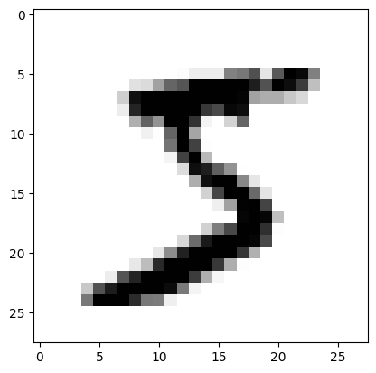
</div>
</div>
</section>
<section id="preparing-the-data">
<h2>Preparing the Data<a class="headerlink" href="#preparing-the-data" title="Link to this heading">#</a></h2>
<p>The neural network takes a 1-d vector of input and will return a 1-d vector of output.  We need to convert our data to this form.</p>
<p>We’ll scale the image data to fall in [0, 1) and the numerical output to be categorized as an array.  Finally, we need the input data to be one-dimensional, so we fill flatten the 28x28 images into a single 784 vector.</p>
<div class="cell docutils container">
<div class="cell_input docutils container">
<div class="highlight-ipython3 notranslate"><div class="highlight"><pre><span></span><span class="n">X_train</span> <span class="o">=</span> <span class="n">X_train</span><span class="o">.</span><span class="n">astype</span><span class="p">(</span><span class="s1">&#39;float32&#39;</span><span class="p">)</span><span class="o">/</span><span class="mi">255</span>
<span class="n">X_test</span> <span class="o">=</span> <span class="n">X_test</span><span class="o">.</span><span class="n">astype</span><span class="p">(</span><span class="s1">&#39;float32&#39;</span><span class="p">)</span><span class="o">/</span><span class="mi">255</span>

<span class="n">X_train</span> <span class="o">=</span> <span class="n">np</span><span class="o">.</span><span class="n">reshape</span><span class="p">(</span><span class="n">X_train</span><span class="p">,</span> <span class="p">(</span><span class="mi">60000</span><span class="p">,</span> <span class="mi">784</span><span class="p">))</span>
<span class="n">X_test</span> <span class="o">=</span> <span class="n">np</span><span class="o">.</span><span class="n">reshape</span><span class="p">(</span><span class="n">X_test</span><span class="p">,</span> <span class="p">(</span><span class="mi">10000</span><span class="p">,</span> <span class="mi">784</span><span class="p">))</span>
</pre></div>
</div>
</div>
</div>
<div class="cell docutils container">
<div class="cell_input docutils container">
<div class="highlight-ipython3 notranslate"><div class="highlight"><pre><span></span><span class="n">X_train</span><span class="p">[</span><span class="mi">0</span><span class="p">]</span>
</pre></div>
</div>
</div>
<div class="cell_output docutils container">
<div class="output text_plain highlight-myst-ansi notranslate"><div class="highlight"><pre><span></span>array([0.        , 0.        , 0.        , 0.        , 0.        ,
       0.        , 0.        , 0.        , 0.        , 0.        ,
       0.        , 0.        , 0.        , 0.        , 0.        ,
       0.        , 0.        , 0.        , 0.        , 0.        ,
       0.        , 0.        , 0.        , 0.        , 0.        ,
       0.        , 0.        , 0.        , 0.        , 0.        ,
       0.        , 0.        , 0.        , 0.        , 0.        ,
       0.        , 0.        , 0.        , 0.        , 0.        ,
       0.        , 0.        , 0.        , 0.        , 0.        ,
       0.        , 0.        , 0.        , 0.        , 0.        ,
       0.        , 0.        , 0.        , 0.        , 0.        ,
       0.        , 0.        , 0.        , 0.        , 0.        ,
       0.        , 0.        , 0.        , 0.        , 0.        ,
       0.        , 0.        , 0.        , 0.        , 0.        ,
       0.        , 0.        , 0.        , 0.        , 0.        ,
       0.        , 0.        , 0.        , 0.        , 0.        ,
       0.        , 0.        , 0.        , 0.        , 0.        ,
       0.        , 0.        , 0.        , 0.        , 0.        ,
       0.        , 0.        , 0.        , 0.        , 0.        ,
       0.        , 0.        , 0.        , 0.        , 0.        ,
       0.        , 0.        , 0.        , 0.        , 0.        ,
       0.        , 0.        , 0.        , 0.        , 0.        ,
       0.        , 0.        , 0.        , 0.        , 0.        ,
       0.        , 0.        , 0.        , 0.        , 0.        ,
       0.        , 0.        , 0.        , 0.        , 0.        ,
       0.        , 0.        , 0.        , 0.        , 0.        ,
       0.        , 0.        , 0.        , 0.        , 0.        ,
       0.        , 0.        , 0.        , 0.        , 0.        ,
       0.        , 0.        , 0.        , 0.        , 0.        ,
       0.        , 0.        , 0.        , 0.        , 0.        ,
       0.        , 0.        , 0.01176471, 0.07058824, 0.07058824,
       0.07058824, 0.49411765, 0.53333336, 0.6862745 , 0.10196079,
       0.6509804 , 1.        , 0.96862745, 0.49803922, 0.        ,
       0.        , 0.        , 0.        , 0.        , 0.        ,
       0.        , 0.        , 0.        , 0.        , 0.        ,
       0.        , 0.11764706, 0.14117648, 0.36862746, 0.6039216 ,
       0.6666667 , 0.99215686, 0.99215686, 0.99215686, 0.99215686,
       0.99215686, 0.88235295, 0.6745098 , 0.99215686, 0.9490196 ,
       0.7647059 , 0.2509804 , 0.        , 0.        , 0.        ,
       0.        , 0.        , 0.        , 0.        , 0.        ,
       0.        , 0.        , 0.        , 0.19215687, 0.93333334,
       0.99215686, 0.99215686, 0.99215686, 0.99215686, 0.99215686,
       0.99215686, 0.99215686, 0.99215686, 0.9843137 , 0.3647059 ,
       0.32156864, 0.32156864, 0.21960784, 0.15294118, 0.        ,
       0.        , 0.        , 0.        , 0.        , 0.        ,
       0.        , 0.        , 0.        , 0.        , 0.        ,
       0.        , 0.07058824, 0.85882354, 0.99215686, 0.99215686,
       0.99215686, 0.99215686, 0.99215686, 0.7764706 , 0.7137255 ,
       0.96862745, 0.94509804, 0.        , 0.        , 0.        ,
       0.        , 0.        , 0.        , 0.        , 0.        ,
       0.        , 0.        , 0.        , 0.        , 0.        ,
       0.        , 0.        , 0.        , 0.        , 0.        ,
       0.3137255 , 0.6117647 , 0.41960785, 0.99215686, 0.99215686,
       0.8039216 , 0.04313726, 0.        , 0.16862746, 0.6039216 ,
       0.        , 0.        , 0.        , 0.        , 0.        ,
       0.        , 0.        , 0.        , 0.        , 0.        ,
       0.        , 0.        , 0.        , 0.        , 0.        ,
       0.        , 0.        , 0.        , 0.        , 0.05490196,
       0.00392157, 0.6039216 , 0.99215686, 0.3529412 , 0.        ,
       0.        , 0.        , 0.        , 0.        , 0.        ,
       0.        , 0.        , 0.        , 0.        , 0.        ,
       0.        , 0.        , 0.        , 0.        , 0.        ,
       0.        , 0.        , 0.        , 0.        , 0.        ,
       0.        , 0.        , 0.        , 0.        , 0.54509807,
       0.99215686, 0.74509805, 0.00784314, 0.        , 0.        ,
       0.        , 0.        , 0.        , 0.        , 0.        ,
       0.        , 0.        , 0.        , 0.        , 0.        ,
       0.        , 0.        , 0.        , 0.        , 0.        ,
       0.        , 0.        , 0.        , 0.        , 0.        ,
       0.        , 0.        , 0.04313726, 0.74509805, 0.99215686,
       0.27450982, 0.        , 0.        , 0.        , 0.        ,
       0.        , 0.        , 0.        , 0.        , 0.        ,
       0.        , 0.        , 0.        , 0.        , 0.        ,
       0.        , 0.        , 0.        , 0.        , 0.        ,
       0.        , 0.        , 0.        , 0.        , 0.        ,
       0.        , 0.13725491, 0.94509804, 0.88235295, 0.627451  ,
       0.42352942, 0.00392157, 0.        , 0.        , 0.        ,
       0.        , 0.        , 0.        , 0.        , 0.        ,
       0.        , 0.        , 0.        , 0.        , 0.        ,
       0.        , 0.        , 0.        , 0.        , 0.        ,
       0.        , 0.        , 0.        , 0.        , 0.        ,
       0.31764707, 0.9411765 , 0.99215686, 0.99215686, 0.46666667,
       0.09803922, 0.        , 0.        , 0.        , 0.        ,
       0.        , 0.        , 0.        , 0.        , 0.        ,
       0.        , 0.        , 0.        , 0.        , 0.        ,
       0.        , 0.        , 0.        , 0.        , 0.        ,
       0.        , 0.        , 0.        , 0.        , 0.1764706 ,
       0.7294118 , 0.99215686, 0.99215686, 0.5882353 , 0.10588235,
       0.        , 0.        , 0.        , 0.        , 0.        ,
       0.        , 0.        , 0.        , 0.        , 0.        ,
       0.        , 0.        , 0.        , 0.        , 0.        ,
       0.        , 0.        , 0.        , 0.        , 0.        ,
       0.        , 0.        , 0.        , 0.0627451 , 0.3647059 ,
       0.9882353 , 0.99215686, 0.73333335, 0.        , 0.        ,
       0.        , 0.        , 0.        , 0.        , 0.        ,
       0.        , 0.        , 0.        , 0.        , 0.        ,
       0.        , 0.        , 0.        , 0.        , 0.        ,
       0.        , 0.        , 0.        , 0.        , 0.        ,
       0.        , 0.        , 0.        , 0.9764706 , 0.99215686,
       0.9764706 , 0.2509804 , 0.        , 0.        , 0.        ,
       0.        , 0.        , 0.        , 0.        , 0.        ,
       0.        , 0.        , 0.        , 0.        , 0.        ,
       0.        , 0.        , 0.        , 0.        , 0.        ,
       0.        , 0.        , 0.        , 0.18039216, 0.50980395,
       0.7176471 , 0.99215686, 0.99215686, 0.8117647 , 0.00784314,
       0.        , 0.        , 0.        , 0.        , 0.        ,
       0.        , 0.        , 0.        , 0.        , 0.        ,
       0.        , 0.        , 0.        , 0.        , 0.        ,
       0.        , 0.        , 0.        , 0.        , 0.15294118,
       0.5803922 , 0.8980392 , 0.99215686, 0.99215686, 0.99215686,
       0.98039216, 0.7137255 , 0.        , 0.        , 0.        ,
       0.        , 0.        , 0.        , 0.        , 0.        ,
       0.        , 0.        , 0.        , 0.        , 0.        ,
       0.        , 0.        , 0.        , 0.        , 0.        ,
       0.09411765, 0.44705883, 0.8666667 , 0.99215686, 0.99215686,
       0.99215686, 0.99215686, 0.7882353 , 0.30588236, 0.        ,
       0.        , 0.        , 0.        , 0.        , 0.        ,
       0.        , 0.        , 0.        , 0.        , 0.        ,
       0.        , 0.        , 0.        , 0.        , 0.        ,
       0.        , 0.09019608, 0.25882354, 0.8352941 , 0.99215686,
       0.99215686, 0.99215686, 0.99215686, 0.7764706 , 0.31764707,
       0.00784314, 0.        , 0.        , 0.        , 0.        ,
       0.        , 0.        , 0.        , 0.        , 0.        ,
       0.        , 0.        , 0.        , 0.        , 0.        ,
       0.        , 0.        , 0.07058824, 0.67058825, 0.85882354,
       0.99215686, 0.99215686, 0.99215686, 0.99215686, 0.7647059 ,
       0.3137255 , 0.03529412, 0.        , 0.        , 0.        ,
       0.        , 0.        , 0.        , 0.        , 0.        ,
       0.        , 0.        , 0.        , 0.        , 0.        ,
       0.        , 0.        , 0.        , 0.21568628, 0.6745098 ,
       0.8862745 , 0.99215686, 0.99215686, 0.99215686, 0.99215686,
       0.95686275, 0.52156866, 0.04313726, 0.        , 0.        ,
       0.        , 0.        , 0.        , 0.        , 0.        ,
       0.        , 0.        , 0.        , 0.        , 0.        ,
       0.        , 0.        , 0.        , 0.        , 0.        ,
       0.        , 0.53333336, 0.99215686, 0.99215686, 0.99215686,
       0.83137256, 0.5294118 , 0.5176471 , 0.0627451 , 0.        ,
       0.        , 0.        , 0.        , 0.        , 0.        ,
       0.        , 0.        , 0.        , 0.        , 0.        ,
       0.        , 0.        , 0.        , 0.        , 0.        ,
       0.        , 0.        , 0.        , 0.        , 0.        ,
       0.        , 0.        , 0.        , 0.        , 0.        ,
       0.        , 0.        , 0.        , 0.        , 0.        ,
       0.        , 0.        , 0.        , 0.        , 0.        ,
       0.        , 0.        , 0.        , 0.        , 0.        ,
       0.        , 0.        , 0.        , 0.        , 0.        ,
       0.        , 0.        , 0.        , 0.        , 0.        ,
       0.        , 0.        , 0.        , 0.        , 0.        ,
       0.        , 0.        , 0.        , 0.        , 0.        ,
       0.        , 0.        , 0.        , 0.        , 0.        ,
       0.        , 0.        , 0.        , 0.        , 0.        ,
       0.        , 0.        , 0.        , 0.        , 0.        ,
       0.        , 0.        , 0.        , 0.        , 0.        ,
       0.        , 0.        , 0.        , 0.        , 0.        ,
       0.        , 0.        , 0.        , 0.        , 0.        ,
       0.        , 0.        , 0.        , 0.        , 0.        ,
       0.        , 0.        , 0.        , 0.        ], dtype=float32)
</pre></div>
</div>
</div>
</div>
<p>As we did in our example, we will use categorical data.  Keras includes routines to categorize data.  In our case, since there are 10 possible digits, we want to put the output into 10 categories (represented by 10 neurons)</p>
<div class="cell docutils container">
<div class="cell_input docutils container">
<div class="highlight-ipython3 notranslate"><div class="highlight"><pre><span></span><span class="kn">from</span> <span class="nn">keras.utils</span> <span class="kn">import</span> <span class="n">np_utils</span>

<span class="n">y_train</span> <span class="o">=</span> <span class="n">np_utils</span><span class="o">.</span><span class="n">to_categorical</span><span class="p">(</span><span class="n">y_train</span><span class="p">,</span> <span class="mi">10</span><span class="p">)</span>
<span class="n">y_test</span> <span class="o">=</span> <span class="n">np_utils</span><span class="o">.</span><span class="n">to_categorical</span><span class="p">(</span><span class="n">y_test</span><span class="p">,</span> <span class="mi">10</span><span class="p">)</span>
</pre></div>
</div>
</div>
<div class="cell_output docutils container">
<div class="output traceback highlight-ipythontb notranslate"><div class="highlight"><pre><span></span><span class="gt">---------------------------------------------------------------------------</span>
<span class="ne">ImportError</span><span class="g g-Whitespace">                               </span>Traceback (most recent call last)
<span class="n">Cell</span> <span class="n">In</span><span class="p">[</span><span class="mi">9</span><span class="p">],</span> <span class="n">line</span> <span class="mi">1</span>
<span class="ne">----&gt; </span><span class="mi">1</span> <span class="kn">from</span> <span class="nn">keras.utils</span> <span class="kn">import</span> <span class="n">np_utils</span>
<span class="g g-Whitespace">      </span><span class="mi">3</span> <span class="n">y_train</span> <span class="o">=</span> <span class="n">np_utils</span><span class="o">.</span><span class="n">to_categorical</span><span class="p">(</span><span class="n">y_train</span><span class="p">,</span> <span class="mi">10</span><span class="p">)</span>
<span class="g g-Whitespace">      </span><span class="mi">4</span> <span class="n">y_test</span> <span class="o">=</span> <span class="n">np_utils</span><span class="o">.</span><span class="n">to_categorical</span><span class="p">(</span><span class="n">y_test</span><span class="p">,</span> <span class="mi">10</span><span class="p">)</span>

<span class="ne">ImportError</span>: cannot import name &#39;np_utils&#39; from &#39;keras.utils&#39; (/opt/hostedtoolcache/Python/3.10.14/x64/lib/python3.10/site-packages/keras/api/utils/__init__.py)
</pre></div>
</div>
</div>
</div>
<p>Now let’s look at the target for the first training digit.  We know from above that it was ‘5’.  Here we see that there is a <code class="docutils literal notranslate"><span class="pre">1</span></code> in the index corresponding to <code class="docutils literal notranslate"><span class="pre">5</span></code> (remember we start counting at <code class="docutils literal notranslate"><span class="pre">0</span></code> in python).</p>
<div class="cell docutils container">
<div class="cell_input docutils container">
<div class="highlight-ipython3 notranslate"><div class="highlight"><pre><span></span><span class="n">y_train</span><span class="p">[</span><span class="mi">0</span><span class="p">]</span>
</pre></div>
</div>
</div>
<div class="cell_output docutils container">
<div class="output text_plain highlight-myst-ansi notranslate"><div class="highlight"><pre><span></span>array([0., 0., 0., 0., 0., 1., 0., 0., 0., 0.], dtype=float32)
</pre></div>
</div>
</div>
</div>
</section>
<section id="build-the-neural-network">
<h2>Build the Neural Network<a class="headerlink" href="#build-the-neural-network" title="Link to this heading">#</a></h2>
<p>Now we’ll build the neural network.  We will have 2 hidden layers, and the number of neurons will look like:</p>
<p>784 → 500 → 300 → 10</p>
<section id="layers">
<h3>Layers<a class="headerlink" href="#layers" title="Link to this heading">#</a></h3>
<p>Let’s start by setting up the layers.  For each layer, we tell keras the number of output neurons.  It infers the number of inputs from the previous layer (with the exception of the input layer, where we need to tell it what to expect as input).</p>
<p>Properties on the layers:</p>
<ul>
<li><p>Dense layers: We will use a <em>dense</em> network.  This means that all neurons in one
layer are connected to all neurons in the next layer (sometimes the
term “fully-connected” is used here).</p></li>
<li><p>Activation function: We previously used the <em>sigmoid</em> function.  Now we’ll
use <a class="reference external" href="https://en.wikipedia.org/wiki/Rectifier_(neural_networks)"><em>rectified linear unit</em></a> (see  also <a class="reference external" href="http://ml-cheatsheet.readthedocs.io/en/latest/activation_functions.html#relu">http://ml-cheatsheet.readthedocs.io/en/latest/activation_functions.html#relu</a>) for all but the last layer.</p>
<p>For the very last layer (the output layer), we use a <a class="reference external" href="https://en.wikipedia.org/wiki/Softmax_function">softmax activation</a>.  This is commonly used with categorical data (like we have) and has the nice property that all of entries add to 1 (so we can interpret them as probabilities).</p>
<p>See <a class="reference external" href="https://keras.io/api/layers/activations/">https://keras.io/api/layers/activations/</a> for a list of activation functions supported.</p>
</li>
<li><p>Dropout: for some of the layers, we will specify a <em>dropout</em>.  This means that
we will ignore some of the neurons in a layer during training (randomly selected
at the specified probability).  This can help present overfitting of the network.</p>
<p>Here’s a nice discussion: <a class="reference external" href="https://medium.com/&#64;amarbudhiraja/https-medium-com-amarbudhiraja-learning-less-to-learn-better-dropout-in-deep-machine-learning-74334da4bfc5">https://medium.com/&#64;amarbudhiraja/https-medium-com-amarbudhiraja-learning-less-to-learn-better-dropout-in-deep-machine-learning-74334da4bfc5</a></p>
</li>
</ul>
<div class="cell docutils container">
<div class="cell_input docutils container">
<div class="highlight-ipython3 notranslate"><div class="highlight"><pre><span></span><span class="kn">from</span> <span class="nn">keras.models</span> <span class="kn">import</span> <span class="n">Sequential</span>
<span class="kn">from</span> <span class="nn">keras.layers.core</span> <span class="kn">import</span> <span class="n">Dense</span><span class="p">,</span> <span class="n">Dropout</span><span class="p">,</span> <span class="n">Activation</span>

<span class="n">model</span> <span class="o">=</span> <span class="n">Sequential</span><span class="p">()</span>
<span class="n">model</span><span class="o">.</span><span class="n">add</span><span class="p">(</span><span class="n">Dense</span><span class="p">(</span><span class="mi">500</span><span class="p">,</span> <span class="n">input_dim</span><span class="o">=</span><span class="mi">784</span><span class="p">,</span> <span class="n">activation</span><span class="o">=</span><span class="s2">&quot;relu&quot;</span><span class="p">))</span>
<span class="n">model</span><span class="o">.</span><span class="n">add</span><span class="p">(</span><span class="n">Dropout</span><span class="p">(</span><span class="mf">0.4</span><span class="p">))</span>
<span class="n">model</span><span class="o">.</span><span class="n">add</span><span class="p">(</span><span class="n">Dense</span><span class="p">(</span><span class="mi">300</span><span class="p">,</span> <span class="n">activation</span><span class="o">=</span><span class="s2">&quot;relu&quot;</span><span class="p">))</span>
<span class="n">model</span><span class="o">.</span><span class="n">add</span><span class="p">(</span><span class="n">Dropout</span><span class="p">(</span><span class="mf">0.4</span><span class="p">))</span>
<span class="n">model</span><span class="o">.</span><span class="n">add</span><span class="p">(</span><span class="n">Dense</span><span class="p">(</span><span class="mi">10</span><span class="p">,</span> <span class="n">activation</span><span class="o">=</span><span class="s2">&quot;softmax&quot;</span><span class="p">))</span>
</pre></div>
</div>
</div>
</div>
<p>Let’s look at the network</p>
<div class="cell docutils container">
<div class="cell_input docutils container">
<div class="highlight-ipython3 notranslate"><div class="highlight"><pre><span></span><span class="kn">from</span> <span class="nn">keras.utils.vis_utils</span> <span class="kn">import</span> <span class="n">plot_model</span>
<span class="n">plot_model</span><span class="p">(</span><span class="n">model</span><span class="p">,</span> <span class="n">show_shapes</span><span class="o">=</span><span class="kc">True</span><span class="p">,</span> <span class="n">show_layer_names</span><span class="o">=</span><span class="kc">True</span><span class="p">)</span>
</pre></div>
</div>
</div>
<div class="cell_output docutils container">
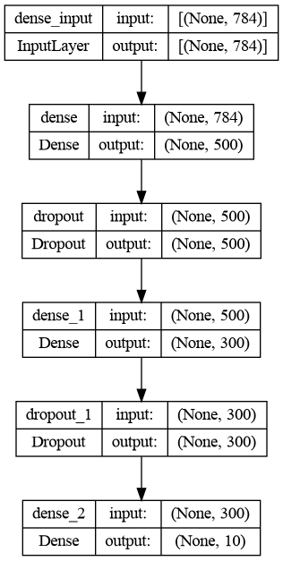
</div>
</div>
</section>
<section id="loss-function">
<h3>Loss function<a class="headerlink" href="#loss-function" title="Link to this heading">#</a></h3>
<p>We need to specify what we want to optimize and how we are going to do it.</p>
<p>Recall: the loss (or cost) function measures how well our predictions match the expected target.
Previously we were using the sum of the squares of the error.</p>
<p>For categorical data, like we have, the “cross-entropy” metric is often used.  See here for an explanation: <a class="reference external" href="https://jamesmccaffrey.wordpress.com/2013/11/05/why-you-should-use-cross-entropy-error-instead-of-classification-error-or-mean-squared-error-for-neural-network-classifier-training/">https://jamesmccaffrey.wordpress.com/2013/11/05/why-you-should-use-cross-entropy-error-instead-of-classification-error-or-mean-squared-error-for-neural-network-classifier-training/</a></p>
</section>
<section id="optimizer">
<h3>Optimizer<a class="headerlink" href="#optimizer" title="Link to this heading">#</a></h3>
<p>We also need to specify an optimizer.  This could be gradient descent, as we used before.  Here’s a list of the optimizers supoprted by keras: <a class="reference external" href="https://keras.io/api/optimizers/">https://keras.io/api/optimizers/</a>  We’ll use <code class="docutils literal notranslate"><span class="pre">RMPprop</span></code>, which builds off of gradient descent and includes some momentum.</p>
<p>Finally, we need to specify a metric that is evaluated during training and testing.  We’ll use <code class="docutils literal notranslate"><span class="pre">&quot;accuracy&quot;</span></code> here.  This means that we’ll see the accuracy of our model reported as we are training and testing.</p>
<p>More details on these options is here: <a class="reference external" href="https://keras.io/api/models/model/">https://keras.io/api/models/model/</a></p>
<div class="cell docutils container">
<div class="cell_input docutils container">
<div class="highlight-ipython3 notranslate"><div class="highlight"><pre><span></span><span class="kn">from</span> <span class="nn">tensorflow.keras.optimizers</span> <span class="kn">import</span> <span class="n">RMSprop</span>

<span class="n">rms</span> <span class="o">=</span> <span class="n">RMSprop</span><span class="p">()</span>
<span class="n">model</span><span class="o">.</span><span class="n">compile</span><span class="p">(</span><span class="n">loss</span><span class="o">=</span><span class="s1">&#39;categorical_crossentropy&#39;</span><span class="p">,</span>
              <span class="n">optimizer</span><span class="o">=</span><span class="n">rms</span><span class="p">,</span> <span class="n">metrics</span><span class="o">=</span><span class="p">[</span><span class="s1">&#39;accuracy&#39;</span><span class="p">])</span>
</pre></div>
</div>
</div>
</div>
</section>
</section>
</section>
<section class="tex2jax_ignore mathjax_ignore" id="train">
<h1>Train<a class="headerlink" href="#train" title="Link to this heading">#</a></h1>
<p>For training, we pass in the inputs and target and the number of epochs to run and it will optimize the network by adjusting the weights between the nodes in the layers.</p>
<p>The number of epochs is the number of times the entire data set is passed forward and backward through the network.  The batch size is the number of training pairs you pass through the network at a given time.  You update the parameter in your model (the weights) once for each batch.  This makes things more efficient and less noisy.</p>
<div class="cell docutils container">
<div class="cell_input docutils container">
<div class="highlight-ipython3 notranslate"><div class="highlight"><pre><span></span><span class="n">epochs</span> <span class="o">=</span> <span class="mi">20</span>
<span class="n">batch_size</span> <span class="o">=</span> <span class="mi">256</span>
<span class="n">model</span><span class="o">.</span><span class="n">fit</span><span class="p">(</span><span class="n">X_train</span><span class="p">,</span> <span class="n">y_train</span><span class="p">,</span> <span class="n">epochs</span><span class="o">=</span><span class="n">epochs</span><span class="p">,</span> <span class="n">batch_size</span><span class="o">=</span><span class="n">batch_size</span><span class="p">,</span>
          <span class="n">validation_data</span><span class="o">=</span><span class="p">(</span><span class="n">X_test</span><span class="p">,</span> <span class="n">y_test</span><span class="p">),</span> <span class="n">verbose</span><span class="o">=</span><span class="mi">2</span><span class="p">)</span>
</pre></div>
</div>
</div>
<div class="cell_output docutils container">
<div class="output stream highlight-myst-ansi notranslate"><div class="highlight"><pre><span></span>Epoch 1/20
235/235 - 2s - loss: 0.3749 - accuracy: 0.8850 - val_loss: 0.1474 - val_accuracy: 0.9546 - 2s/epoch - 7ms/step
Epoch 2/20
235/235 - 1s - loss: 0.1597 - accuracy: 0.9515 - val_loss: 0.1051 - val_accuracy: 0.9678 - 1s/epoch - 6ms/step
Epoch 3/20
235/235 - 1s - loss: 0.1184 - accuracy: 0.9650 - val_loss: 0.0835 - val_accuracy: 0.9733 - 1s/epoch - 6ms/step
Epoch 4/20
235/235 - 1s - loss: 0.0976 - accuracy: 0.9699 - val_loss: 0.0717 - val_accuracy: 0.9783 - 1s/epoch - 6ms/step
Epoch 5/20
235/235 - 1s - loss: 0.0833 - accuracy: 0.9744 - val_loss: 0.0667 - val_accuracy: 0.9802 - 1s/epoch - 6ms/step
Epoch 6/20
235/235 - 1s - loss: 0.0735 - accuracy: 0.9774 - val_loss: 0.0672 - val_accuracy: 0.9803 - 1s/epoch - 6ms/step
Epoch 7/20
235/235 - 1s - loss: 0.0625 - accuracy: 0.9804 - val_loss: 0.0625 - val_accuracy: 0.9808 - 1s/epoch - 6ms/step
Epoch 8/20
235/235 - 1s - loss: 0.0592 - accuracy: 0.9818 - val_loss: 0.0573 - val_accuracy: 0.9824 - 1s/epoch - 6ms/step
Epoch 9/20
235/235 - 1s - loss: 0.0526 - accuracy: 0.9823 - val_loss: 0.0615 - val_accuracy: 0.9819 - 1s/epoch - 6ms/step
Epoch 10/20
235/235 - 1s - loss: 0.0483 - accuracy: 0.9844 - val_loss: 0.0619 - val_accuracy: 0.9823 - 1s/epoch - 6ms/step
Epoch 11/20
235/235 - 1s - loss: 0.0461 - accuracy: 0.9854 - val_loss: 0.0646 - val_accuracy: 0.9821 - 1s/epoch - 6ms/step
Epoch 12/20
235/235 - 1s - loss: 0.0420 - accuracy: 0.9863 - val_loss: 0.0606 - val_accuracy: 0.9834 - 1s/epoch - 6ms/step
Epoch 13/20
235/235 - 1s - loss: 0.0397 - accuracy: 0.9871 - val_loss: 0.0611 - val_accuracy: 0.9827 - 1s/epoch - 6ms/step
Epoch 14/20
235/235 - 1s - loss: 0.0378 - accuracy: 0.9877 - val_loss: 0.0598 - val_accuracy: 0.9836 - 1s/epoch - 6ms/step
Epoch 15/20
235/235 - 1s - loss: 0.0343 - accuracy: 0.9892 - val_loss: 0.0646 - val_accuracy: 0.9828 - 1s/epoch - 6ms/step
Epoch 16/20
235/235 - 1s - loss: 0.0330 - accuracy: 0.9898 - val_loss: 0.0646 - val_accuracy: 0.9830 - 1s/epoch - 6ms/step
Epoch 17/20
235/235 - 1s - loss: 0.0319 - accuracy: 0.9895 - val_loss: 0.0639 - val_accuracy: 0.9832 - 1s/epoch - 6ms/step
Epoch 18/20
235/235 - 1s - loss: 0.0290 - accuracy: 0.9906 - val_loss: 0.0603 - val_accuracy: 0.9848 - 1s/epoch - 6ms/step
Epoch 19/20
235/235 - 1s - loss: 0.0295 - accuracy: 0.9904 - val_loss: 0.0603 - val_accuracy: 0.9855 - 1s/epoch - 6ms/step
Epoch 20/20
235/235 - 1s - loss: 0.0282 - accuracy: 0.9909 - val_loss: 0.0589 - val_accuracy: 0.9851 - 1s/epoch - 6ms/step
</pre></div>
</div>
<div class="output text_plain highlight-myst-ansi notranslate"><div class="highlight"><pre><span></span>&lt;keras.callbacks.History at 0x7faa75320090&gt;
</pre></div>
</div>
</div>
</div>
<section id="test">
<h2>Test<a class="headerlink" href="#test" title="Link to this heading">#</a></h2>
<p>keras has a routine, <code class="docutils literal notranslate"><span class="pre">evaluate()</span></code> that can take the inputs and targets of a test data set and return the loss value and accuracy (or other defined metrics) on this data.</p>
<p>Here we see we are &gt; 98% accurate on the test data—this is the data that the model has never seen before (and was not trained with).</p>
<div class="cell docutils container">
<div class="cell_input docutils container">
<div class="highlight-ipython3 notranslate"><div class="highlight"><pre><span></span><span class="n">loss_value</span><span class="p">,</span> <span class="n">accuracy</span> <span class="o">=</span> <span class="n">model</span><span class="o">.</span><span class="n">evaluate</span><span class="p">(</span><span class="n">X_test</span><span class="p">,</span> <span class="n">y_test</span><span class="p">,</span> <span class="n">batch_size</span><span class="o">=</span><span class="mi">16</span><span class="p">)</span>
<span class="nb">print</span><span class="p">(</span><span class="n">accuracy</span><span class="p">)</span>
</pre></div>
</div>
</div>
<div class="cell_output docutils container">
<div class="output stream highlight-myst-ansi notranslate"><div class="highlight"><pre><span></span>625/625 [==============================] - 1s 813us/step - loss: 0.0589 - accuracy: 0.9851
0.9850999712944031
</pre></div>
</div>
</div>
</div>
</section>
<section id="predicting">
<h2>Predicting<a class="headerlink" href="#predicting" title="Link to this heading">#</a></h2>
<p>Suppose we simply want to ask our neural network to predict the target for an input.  We can use the <code class="docutils literal notranslate"><span class="pre">predict()</span></code> method to return the category array with the predictions.  We can then use <code class="docutils literal notranslate"><span class="pre">np.argmax()</span></code> to select the most probable.</p>
<div class="cell docutils container">
<div class="cell_input docutils container">
<div class="highlight-ipython3 notranslate"><div class="highlight"><pre><span></span><span class="n">np</span><span class="o">.</span><span class="n">argmax</span><span class="p">(</span><span class="n">model</span><span class="o">.</span><span class="n">predict</span><span class="p">(</span><span class="n">np</span><span class="o">.</span><span class="n">array</span><span class="p">([</span><span class="n">X_test</span><span class="p">[</span><span class="mi">0</span><span class="p">]])))</span>
</pre></div>
</div>
</div>
<div class="cell_output docutils container">
<div class="output stream highlight-myst-ansi notranslate"><div class="highlight"><pre><span></span>1/1 [==============================] - 0s 46ms/step
</pre></div>
</div>
<div class="output text_plain highlight-myst-ansi notranslate"><div class="highlight"><pre><span></span>7
</pre></div>
</div>
</div>
</div>
<div class="cell docutils container">
<div class="cell_input docutils container">
<div class="highlight-ipython3 notranslate"><div class="highlight"><pre><span></span><span class="n">y_test</span><span class="p">[</span><span class="mi">0</span><span class="p">]</span>
</pre></div>
</div>
</div>
<div class="cell_output docutils container">
<div class="output text_plain highlight-myst-ansi notranslate"><div class="highlight"><pre><span></span>array([0., 0., 0., 0., 0., 0., 0., 1., 0., 0.], dtype=float32)
</pre></div>
</div>
</div>
</div>
<p>Now let’s loop over the test set and print out what we predict vs. the true answer for those we get wrong.  We can also plot the image of the digit.</p>
<div class="cell docutils container">
<div class="cell_input docutils container">
<div class="highlight-ipython3 notranslate"><div class="highlight"><pre><span></span><span class="n">wrong</span> <span class="o">=</span> <span class="mi">0</span>
<span class="n">max_wrong</span> <span class="o">=</span> <span class="mi">10</span>

<span class="k">for</span> <span class="n">n</span><span class="p">,</span> <span class="p">(</span><span class="n">x</span><span class="p">,</span> <span class="n">y</span><span class="p">)</span> <span class="ow">in</span> <span class="nb">enumerate</span><span class="p">(</span><span class="nb">zip</span><span class="p">(</span><span class="n">X_test</span><span class="p">,</span> <span class="n">y_test</span><span class="p">)):</span>
    <span class="k">try</span><span class="p">:</span>
        <span class="n">res</span> <span class="o">=</span> <span class="n">model</span><span class="o">.</span><span class="n">predict</span><span class="p">(</span><span class="n">np</span><span class="o">.</span><span class="n">array</span><span class="p">([</span><span class="n">x</span><span class="p">]),</span> <span class="n">verbose</span><span class="o">=</span><span class="mi">0</span><span class="p">)</span>
        <span class="k">if</span> <span class="n">np</span><span class="o">.</span><span class="n">argmax</span><span class="p">(</span><span class="n">res</span><span class="p">)</span> <span class="o">!=</span> <span class="n">np</span><span class="o">.</span><span class="n">argmax</span><span class="p">(</span><span class="n">y</span><span class="p">):</span>
            <span class="nb">print</span><span class="p">(</span><span class="s2">&quot;test </span><span class="si">{}</span><span class="s2">: prediction = </span><span class="si">{}</span><span class="s2">, truth is </span><span class="si">{}</span><span class="s2">&quot;</span><span class="o">.</span><span class="n">format</span><span class="p">(</span><span class="n">n</span><span class="p">,</span> <span class="n">np</span><span class="o">.</span><span class="n">argmax</span><span class="p">(</span><span class="n">res</span><span class="p">),</span> <span class="n">np</span><span class="o">.</span><span class="n">argmax</span><span class="p">(</span><span class="n">y</span><span class="p">)))</span>
            <span class="n">plt</span><span class="o">.</span><span class="n">imshow</span><span class="p">(</span><span class="n">x</span><span class="o">.</span><span class="n">reshape</span><span class="p">(</span><span class="mi">28</span><span class="p">,</span> <span class="mi">28</span><span class="p">),</span> <span class="n">cmap</span><span class="o">=</span><span class="s2">&quot;gray_r&quot;</span><span class="p">)</span>
            <span class="n">plt</span><span class="o">.</span><span class="n">show</span><span class="p">()</span>
            <span class="n">wrong</span> <span class="o">+=</span> <span class="mi">1</span>
            <span class="k">if</span> <span class="p">(</span><span class="n">wrong</span> <span class="o">&gt;</span> <span class="n">max_wrong</span><span class="o">-</span><span class="mi">1</span><span class="p">):</span>
                <span class="k">break</span>
    <span class="k">except</span> <span class="ne">KeyboardInterrupt</span><span class="p">:</span>
        <span class="nb">print</span><span class="p">(</span><span class="s2">&quot;stopping&quot;</span><span class="p">)</span>
        <span class="k">break</span>
</pre></div>
</div>
</div>
<div class="cell_output docutils container">
<div class="output stream highlight-myst-ansi notranslate"><div class="highlight"><pre><span></span>test 247: prediction = 2, truth is 4
</pre></div>
</div>
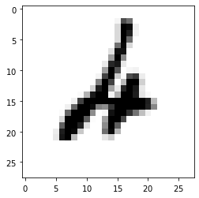
<div class="output stream highlight-myst-ansi notranslate"><div class="highlight"><pre><span></span>test 321: prediction = 7, truth is 2
</pre></div>
</div>
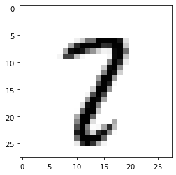
<div class="output stream highlight-myst-ansi notranslate"><div class="highlight"><pre><span></span>test 340: prediction = 3, truth is 5
</pre></div>
</div>
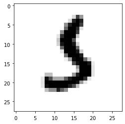
<div class="output stream highlight-myst-ansi notranslate"><div class="highlight"><pre><span></span>test 445: prediction = 0, truth is 6
</pre></div>
</div>
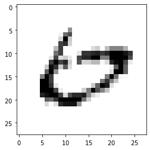
<div class="output stream highlight-myst-ansi notranslate"><div class="highlight"><pre><span></span>test 495: prediction = 2, truth is 8
</pre></div>
</div>
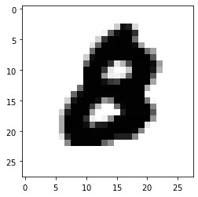
<div class="output stream highlight-myst-ansi notranslate"><div class="highlight"><pre><span></span>test 582: prediction = 2, truth is 8
</pre></div>
</div>
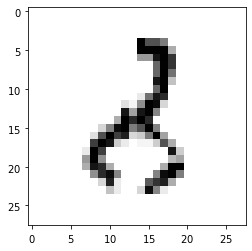
<div class="output stream highlight-myst-ansi notranslate"><div class="highlight"><pre><span></span>test 619: prediction = 8, truth is 1
</pre></div>
</div>
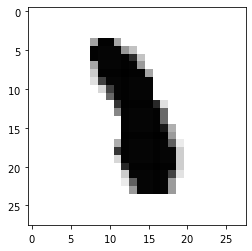
<div class="output stream highlight-myst-ansi notranslate"><div class="highlight"><pre><span></span>test 646: prediction = 6, truth is 2
</pre></div>
</div>
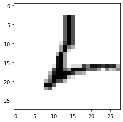
<div class="output stream highlight-myst-ansi notranslate"><div class="highlight"><pre><span></span>test 674: prediction = 3, truth is 5
</pre></div>
</div>
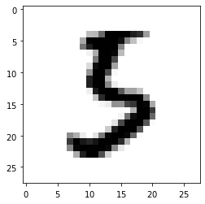
<div class="output stream highlight-myst-ansi notranslate"><div class="highlight"><pre><span></span>test 684: prediction = 3, truth is 7
</pre></div>
</div>
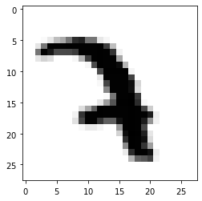
</div>
</div>
</section>
<section id="experimenting">
<h2>Experimenting<a class="headerlink" href="#experimenting" title="Link to this heading">#</a></h2>
<p>There are a number of things we can play with to see how the network performace
changes:</p>
<ul class="simple">
<li><p>batch size</p></li>
<li><p>adding or removing hidden layers</p></li>
<li><p>changing the dropout</p></li>
<li><p>changing the activation function</p></li>
</ul>
</section>
<section id="callbacks">
<h2>Callbacks<a class="headerlink" href="#callbacks" title="Link to this heading">#</a></h2>
<p>Keras allows for callbacks each epoch to store some information.  These can allow you to,
for example, plot of the accuracy vs. epoch by adding a callback.  Take a look here for some inspiration:</p>
<p><a class="reference external" href="https://www.tensorflow.org/api_docs/python/tf/keras/callbacks/History">https://www.tensorflow.org/api_docs/python/tf/keras/callbacks/History</a></p>
</section>
<section id="going-further">
<h2>Going Further<a class="headerlink" href="#going-further" title="Link to this heading">#</a></h2>
<p>Convolutional neural networks are often used for image recognition, especially with larger images.  They use filter to try to recognize patterns in portions of images (A tile).  See this for a keras example:</p>
<p><a class="reference external" href="https://www.tensorflow.org/tutorials/images/cnn">https://www.tensorflow.org/tutorials/images/cnn</a></p>
</section>
</section>

    <script type="text/x-thebe-config">
    {
        requestKernel: true,
        binderOptions: {
            repo: "binder-examples/jupyter-stacks-datascience",
            ref: "master",
        },
        codeMirrorConfig: {
            theme: "abcdef",
            mode: "python"
        },
        kernelOptions: {
            name: "python3",
            path: "./machine-learning"
        },
        predefinedOutput: true
    }
    </script>
    <script>kernelName = 'python3'</script>

                </article>
              

              
              
              
              
                <footer class="prev-next-footer">
                  
<div class="prev-next-area">
    <a class="left-prev"
       href="machine-learning-libraries.html"
       title="previous page">
      <i class="fa-solid fa-angle-left"></i>
      <div class="prev-next-info">
        <p class="prev-next-subtitle">previous</p>
        <p class="prev-next-title">Diving Deeper into Machine Learning</p>
      </div>
    </a>
    <a class="right-next"
       href="keras-last-number.html"
       title="next page">
      <div class="prev-next-info">
        <p class="prev-next-subtitle">next</p>
        <p class="prev-next-title">Keras and the Last Number Problem</p>
      </div>
      <i class="fa-solid fa-angle-right"></i>
    </a>
</div>
                </footer>
              
            </div>
            
            
              
                <div class="bd-sidebar-secondary bd-toc"><div class="sidebar-secondary-items sidebar-secondary__inner">


  <div class="sidebar-secondary-item">
  <div class="page-toc tocsection onthispage">
    <i class="fa-solid fa-list"></i> Contents
  </div>
  <nav class="bd-toc-nav page-toc">
    <ul class="visible nav section-nav flex-column">
<li class="toc-h1 nav-item toc-entry"><a class="reference internal nav-link" href="#">KERAS and MNIST</a><ul class="visible nav section-nav flex-column">
<li class="toc-h2 nav-item toc-entry"><a class="reference internal nav-link" href="#the-mnist-data">The MNIST data</a></li>
<li class="toc-h2 nav-item toc-entry"><a class="reference internal nav-link" href="#preparing-the-data">Preparing the Data</a></li>
<li class="toc-h2 nav-item toc-entry"><a class="reference internal nav-link" href="#build-the-neural-network">Build the Neural Network</a><ul class="nav section-nav flex-column">
<li class="toc-h3 nav-item toc-entry"><a class="reference internal nav-link" href="#layers">Layers</a></li>
<li class="toc-h3 nav-item toc-entry"><a class="reference internal nav-link" href="#loss-function">Loss function</a></li>
<li class="toc-h3 nav-item toc-entry"><a class="reference internal nav-link" href="#optimizer">Optimizer</a></li>
</ul>
</li>
</ul>
</li>
<li class="toc-h1 nav-item toc-entry"><a class="reference internal nav-link" href="#train">Train</a><ul class="visible nav section-nav flex-column">
<li class="toc-h2 nav-item toc-entry"><a class="reference internal nav-link" href="#test">Test</a></li>
<li class="toc-h2 nav-item toc-entry"><a class="reference internal nav-link" href="#predicting">Predicting</a></li>
<li class="toc-h2 nav-item toc-entry"><a class="reference internal nav-link" href="#experimenting">Experimenting</a></li>
<li class="toc-h2 nav-item toc-entry"><a class="reference internal nav-link" href="#callbacks">Callbacks</a></li>
<li class="toc-h2 nav-item toc-entry"><a class="reference internal nav-link" href="#going-further">Going Further</a></li>
</ul>
</li>
</ul>

  </nav></div>

</div></div>
              
            
          </div>
          <footer class="bd-footer-content">
            
<div class="bd-footer-content__inner container">
  
  <div class="footer-item">
    
<p class="component-author">
By <a href="https://zingale.github.io">Michael Zingale</a>
</p>

  </div>
  
  <div class="footer-item">
    

  </div>
  
  <div class="footer-item">
    
  </div>
  
  <div class="footer-item">
    
<div class="extra_footer">
  <p>
&copy; 2021-2023; CC-BY-NC-SA 4.0
<p>

</div>
  </div>
  
</div>
          </footer>
        

      </main>
    </div>
  </div>
  
  <!-- Scripts loaded after <body> so the DOM is not blocked -->
  <script src="../_static/scripts/bootstrap.js?digest=8d27b9dea8ad943066ae"></script>
<script src="../_static/scripts/pydata-sphinx-theme.js?digest=8d27b9dea8ad943066ae"></script>

  <footer class="bd-footer">
  </footer>
  </body>
</html>